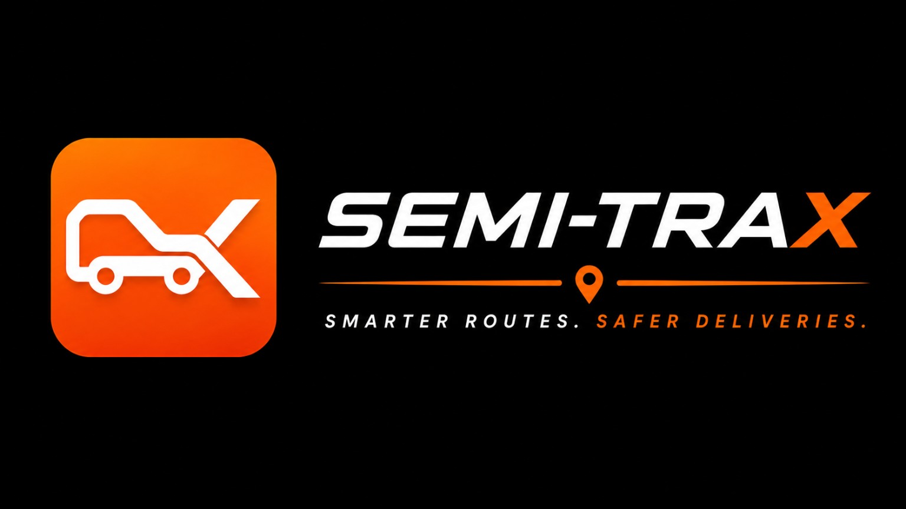
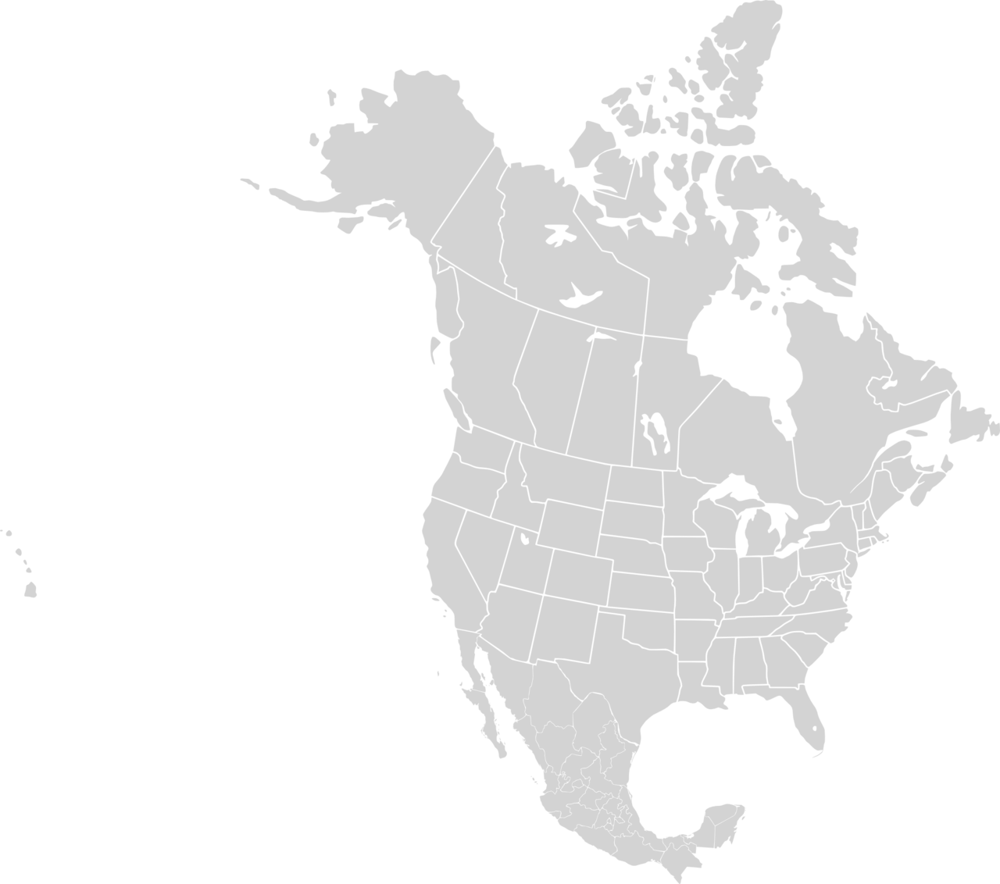

Truck-aware routing
Routes calculated around your vehicle's height, weight, length, width, axles, trailer, and hazmat profile.

Contact us →● BUILT FOR COMMERCIAL TRUCKING
Professional truck navigation that helps drivers plan safer, compliant, and more efficient routes across the United States, Canada, and Mexico.
✓ Driver-centered ✓ Fleet-ready ✓ U.S. + Canada + Mexico
NORTH AMERICA COVERAGE
Semi-Trax currently focuses its truck-navigation experience across the United States, Canada, and Mexico, with vehicle-aware routing designed for long-haul and cross-border operations.
50U.S. states
10 + 3Canadian provinces and territories
32Mexican federal entities
3Countries covered

NAVIGATION, RE-ENGINEERED
Semi-Trax starts with the truck - then builds the route. Every guidance decision is shaped around professional drivers and the vehicles they operate.
Routes calculated around your vehicle's height, weight, length, width, axles, trailer, and hazmat profile.
Clear turn-by-turn directions, lane guidance, route previews, voice prompts, and automatic rerouting.
Traffic-aware ETAs, incidents, closures, and relevant road warnings when licensed data is available.
Keep navigating through low-signal areas with downloadable U.S., Canada, and Mexico map coverage.
THE COMPLETE JOURNEY
Plan the trip, find truck-relevant stops, monitor conditions, and stay focused - without jumping between multiple apps.
CONFIGURATIONSingle / Double / Triple
HEIGHTUp to 13′ 6″
WEIGHTUp to 80,000 lb*
AXLESUp to 9
✓ Multi-trailer restriction routing
✓ Bridge clearance and weight checks
✓ State and approved-network rules
*Standard non-permitted configuration. Length and combination limits vary by jurisdiction, route, and permit.FOR OWNER-OPERATORS AND FLEETS
Semi-Trax is designed to grow from a focused pilot into a scalable North American navigation platform for independent drivers and fleet operations.
PILOT25-100Drivers
YEAR ONE1K-5KDrivers
LONG-TERM TARGET500KDrivers
THE NEXT MILE STARTS HERE